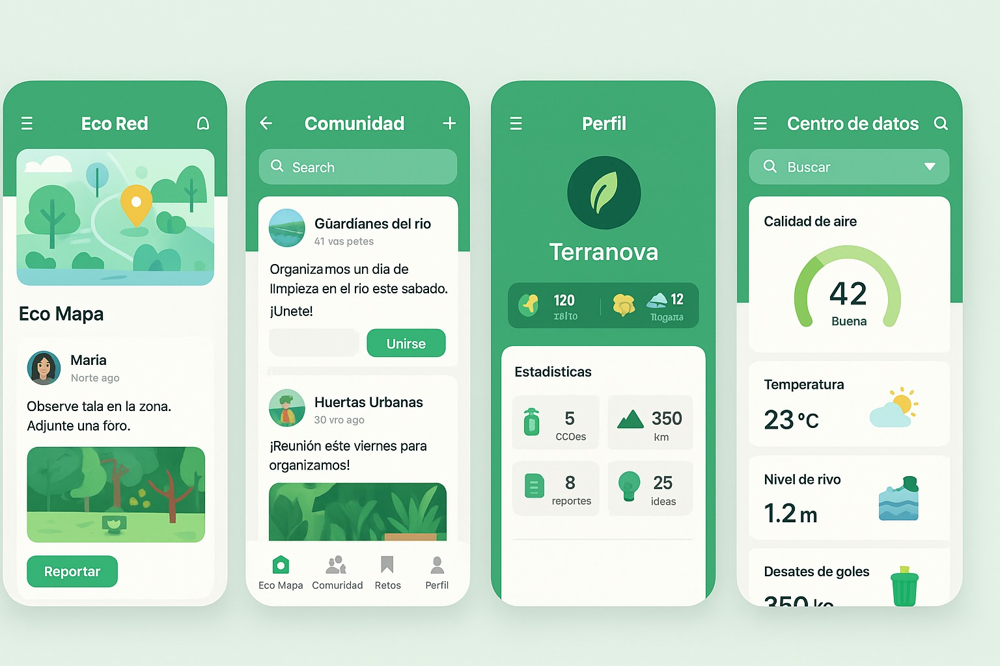

Eco Red
This app is designed for environmental conservation and community participation, combining maps, social media, and environmental data.
Eco Map-First section
The eco map shows us an ecological map where users can report environmental events or issues such as deforestation, air or water pollution, and poor waste management, etc. Each user can attach photos or comments. It also has a “report” button that opens a form to record the type of problem, its location, and a description.
Community-Second section
Community is the part where the community is a type of green social network that allows you to create posts about activities such as environmental clean-up days at certain sites and at certain times that are affected by waste.
Profile-Third section
The profile allows community members to create their user account and earn virtual medals for their environmental achievements, such as the number of ecological actions, number of incidents reported, contributions to sustainability, etc.
DataCenter-Fourth section
The data center allows us to present real-time environmental information about air quality, whether it is polluted or in good condition, as well as the current temperature, river level etc. This would be viewed by area, where people can explore it by category.